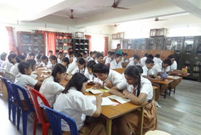

Our school have well maintained and air conditioned libraries where students can read books in a silenced and in moderate environment. Our libraries contains books in order of fiction, autobiographies, biographies, encyclopedia, reader's digest magazines and curriculum books basically NCERT.
